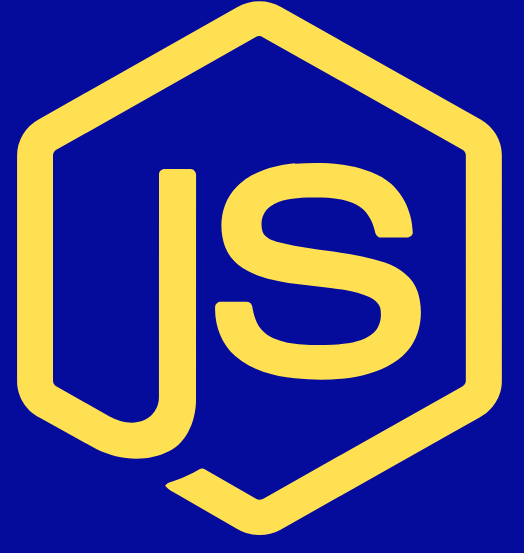
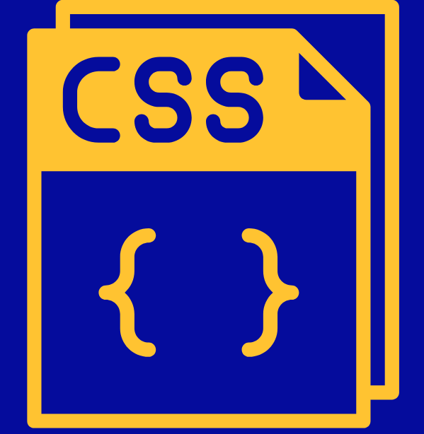
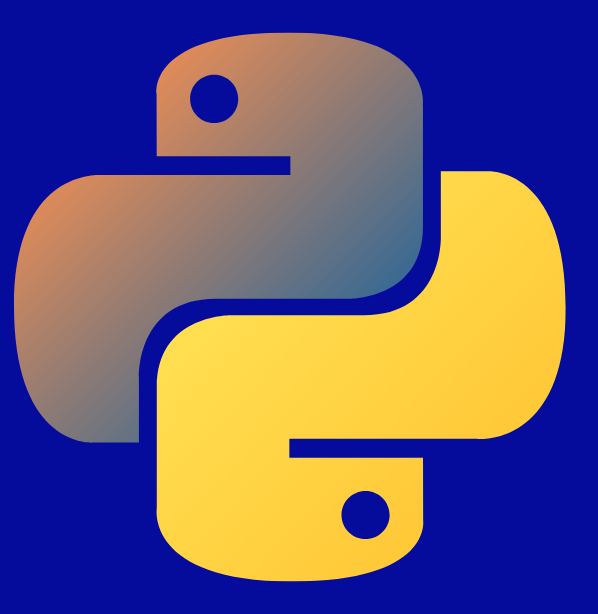
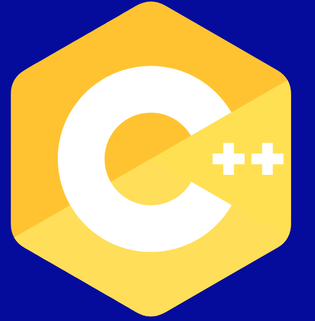
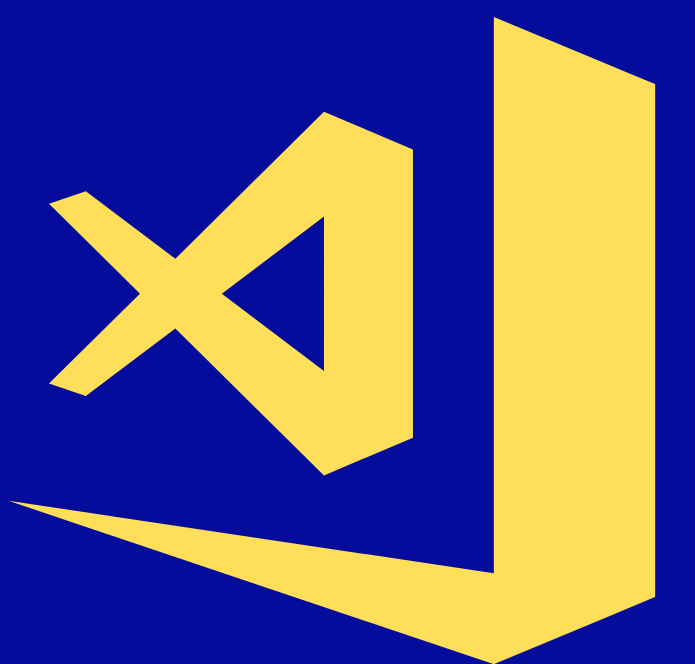
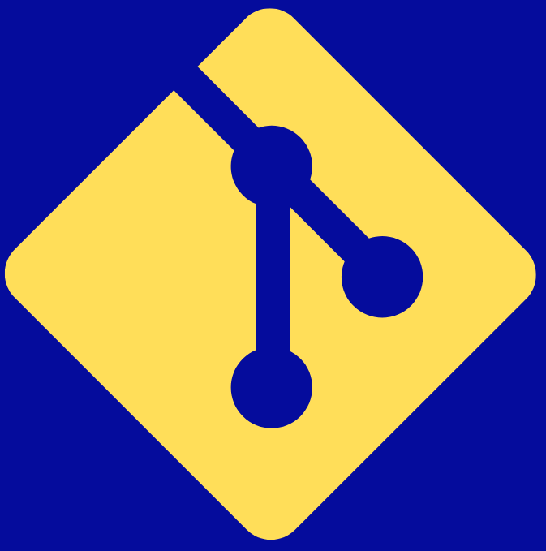
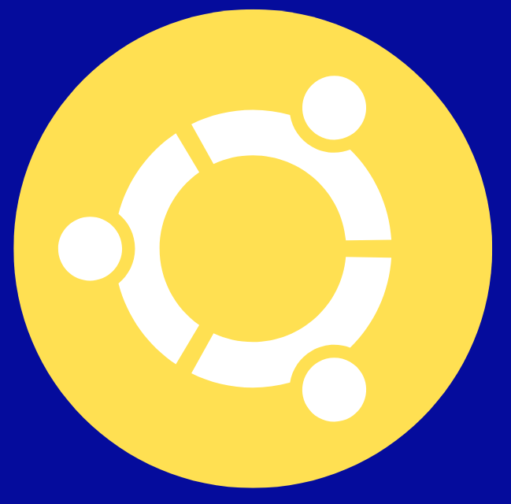
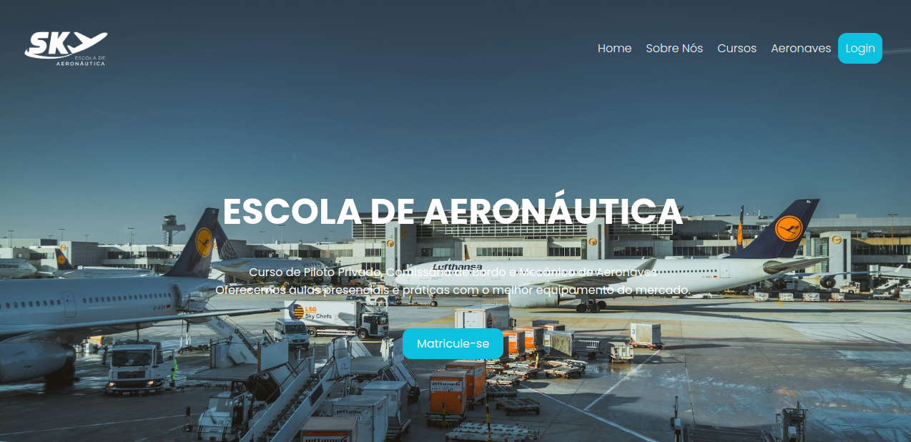

Sou uma desenvolvedora backend recém-graduada em Sistemas de Informação
pela Universidade Federal de Uberlândia. Durante minha trajetória
acadêmica, dediquei-me a pesquisas científicas, incluindo
"Algoritmo Evolutivo aplicado ao Problema do Percurso do Cavalo" e
"Introdução à Ciência de Dados com R". Além disso, participei
da maratona de programação ICPC por três anos consecutivos,
aprimorando meu pensamento computacional e conhecimentos em
estruturas de dados. Minhas principais linguagens
de desenvolvimento são C, C++, Python e JavaScript.
Profissionalmente, tenho experiência com .NET, JavaScript e SQL,
desenvolvendo soluções backend para clientes. Atualmente,
busco oportunidades que envolvam desenvolvimento Web
e aprendizado de máquina.








A Sky Escola de Aeronáutica, localizada em Goiânia - Goiás,
é uma instituição voltada à formação de pilotos de aviação civil.
Credenciada pela ANAC, a escola oferece um curso completo,
abrangendo desde aulas teóricas até voos solo em aeronaves
dos modelos C152, C172, COLT100 e PA34. Minha atuação envolveu o
desenvolvimento de um website institucional para a empresa,
com destaque para os cursos oferecidos e sua localização geográfica.
Para garantir um design exclusivo, utilizei apenas HTML, CSS e JavaScript,
sem recorrer ao Bootstrap.
Monografia apresentada à Faculdade de Computação da
Universidade Federal de Uberlândia, Minas Gerais, como requisito,
parcial, exigido à obtenção do grau de Bacharel em
Sistemas de Informação.